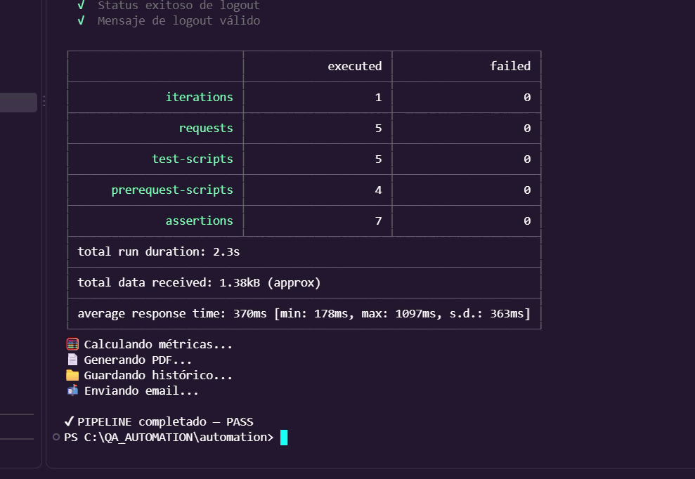
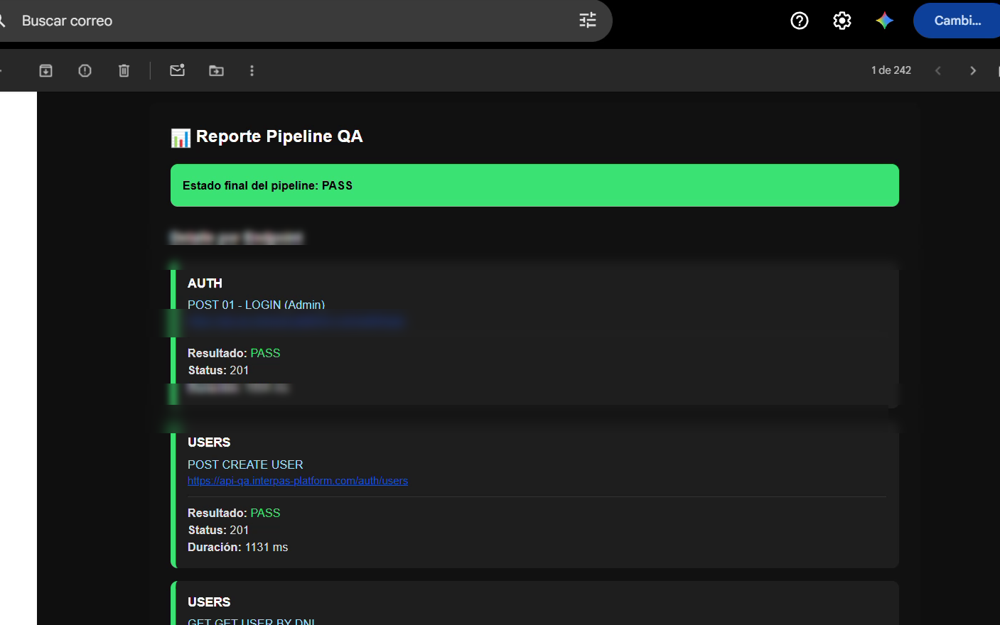
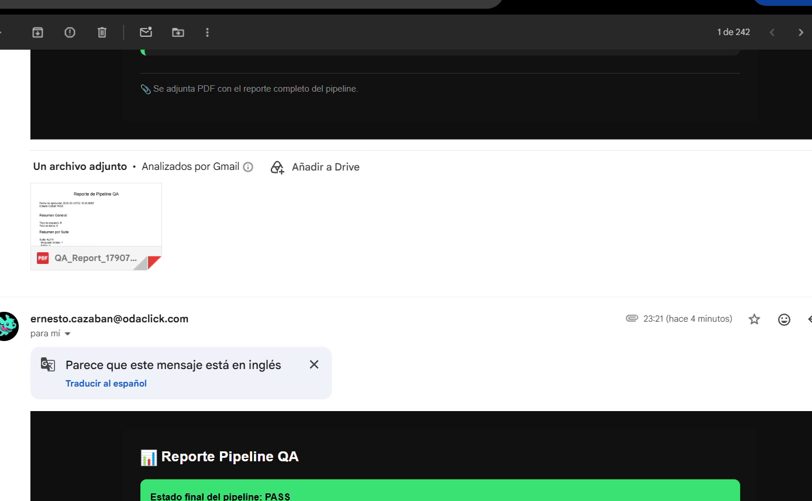
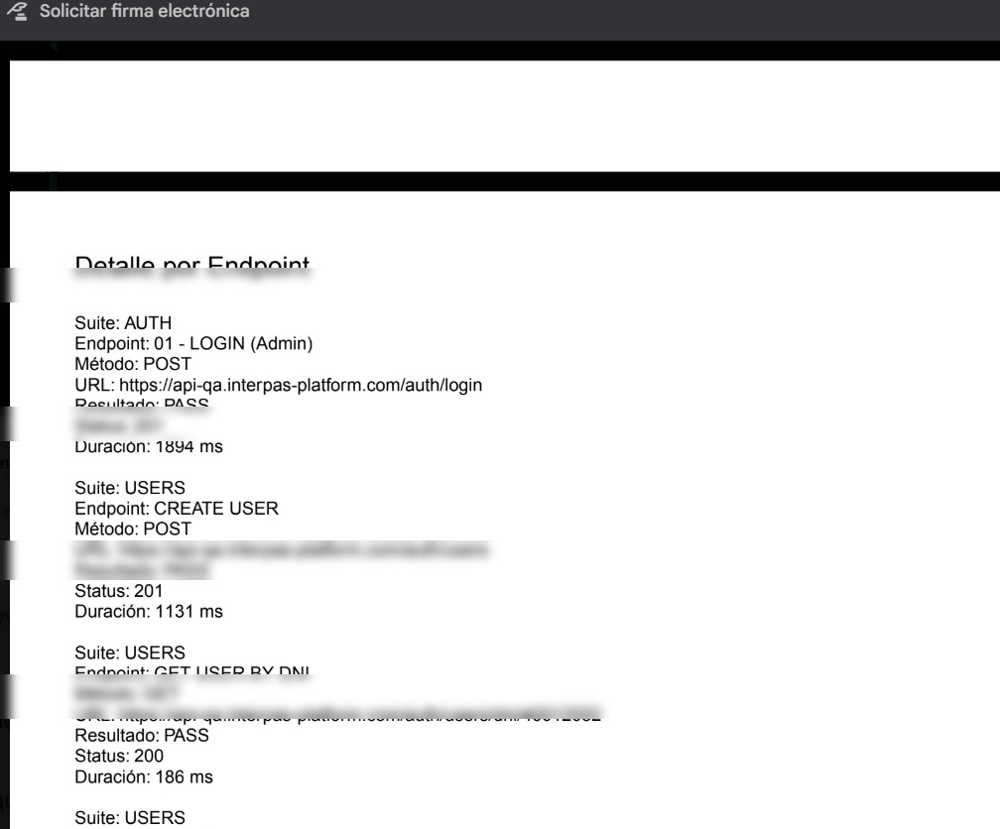

Soy QA Tester con experiencia en testing
funcional de aplicaciones web, APIs REST
y validaciones de procesos end-to-end.
Trabajo analizando requerimientos,
criterios de aceptación y reglas de negocio
para diseñar escenarios de prueba que permitan
encontrar defectos y reducir riesgos.
Mi enfoque combina testing funcional,
validación de APIs, análisis de datos,
documentación de evidencias y seguimiento
de defectos.
Testing Funcional
Smoke, Regression, Exploratory y E2E.
APIs y Backend
REST APIs, JSON, contratos y reglas
de negocio.
Gestión de Defectos
Reporte, evidencia, seguimiento
y trazabilidad.
ÁREAS DE EXPERIENCIA
Diferentes dominios,
mismo objetivo.
Seguros
Validación de cotización, propuesta,
emisión, pólizas y documentación.
Salud
Validación de aplicaciones y procesos
relacionados con salud.
Entretenimiento
Testing funcional y validación
de experiencias digitales.
Educación
Testing de aplicaciones y
plataformas educativas.
PROYECTOS
QA en
acción.
QA AUTOMATION / API TESTING
Pipeline de QA Automatizado
Pipeline de pruebas automatizadas de APIs
REST para validar flujos críticos,
generar métricas, reportes y mantener
trazabilidad de las ejecuciones.
AUTH→USERS→MÉTRICAS→REPORTE→EMAIL
PostmanNewmanNode.jsJavaScript
TESTING FUNCIONAL / E2E
QA de Plataforma de Seguros
Testing de procesos completos de
cotización, propuesta, emisión,
póliza y documentación.
COTIZACIÓN→PROPUESTA→EMISIÓN→PÓLIZA→DOCUMENTACIÓN
PostmanSQL ServerSwaggerQMetryJira
QA / IA / AUTOMATIZACIÓN
QA Test Case Generator
Herramienta web desarrollada para generar
casos de prueba estructurados en Gherkin
a partir de historias de usuario, descripciones
funcionales o criterios de aceptación.
REQUERIMIENTO→ANÁLISIS QA→GHERKIN→TEST CASES
HTMLCSSJavaScriptNode.jsExpressIAGherkin
PROCESO
Cómo abordo
el testing.
Analizar
Analizo requerimientos, criterios
de aceptación y reglas de negocio.
Diseñar
Defino escenarios positivos,
negativos y casos límite.
Ejecutar
Ejecuto pruebas funcionales,
API, regresión y E2E.
Validar
Analizo respuestas, datos y
comportamiento esperado.
Reportar
Documento defectos con evidencia
clara y reproducible.
Dar seguimiento
Valido correcciones y ejecuto
pruebas de regresión.
TESTING DE APIs
Validar más allá
de la interfaz.
El testing de APIs permite validar la
comunicación entre servicios, contratos,
respuestas y reglas de negocio,
independientemente de la interfaz.
✓Respuestas HTTP
✓Validación JSON
✓Contratos de API
✓Reglas de negocio
✓Integración FE / BE
✓Flujos End-to-End
EVIDENCIAS
Documentar para
comunicar.
CASO DE PRUEBA
GHERKIN
Funcionalidad:
Consulta de póliza
Escenario:
Consultar póliza existente
Dado
que el usuario se encuentra
en el listado de pólizas
Cuando
selecciona una póliza
Entonces
debe visualizar el detalle
de la póliza
REPORTE DE BUG
JIRA
DEFECTO
Comportamiento inesperado
Documentación clara del escenario,
pasos para reproducir, resultado
actual y resultado esperado.
Pasos para reproducir
Resultado actual
Resultado esperado
Pipeline de QA automatizado diseñado para ejecutar
pruebas de APIs de forma local y programada,
utilizando Postman como motor principal de testing.
Permite validar flujos críticos, generar métricas,
reportes, histórico de ejecuciones y notificaciones
por email.
PASS / FAILPostman + NewmanEjecución programadaMétricas y reportesTrazabilidad histórica
Objetivo del proyecto
Automatizar la ejecución diaria de pruebas
de API asegurando validación funcional continua,
visibilidad del estado del sistema, evidencia
automática de ejecuciones y trazabilidad histórica.
El token se obtiene desde la colección AUTH,
se guarda como variable de entorno y es reutilizado
por las requests del Pipeline. Se genera una sola
vez por ejecución para evitar llamadas redundantes
y mantener consistencia.
Métricas generadas
La ejecución genera información resumida para
analizar el comportamiento del Pipeline y conservar
evidencia de cada corrida.
TestsEjecutados
ResultadoPass / Fail
TiempoEjecución
EstadoPipeline
Reportes y trazabilidad
Reporte PDF
Fecha y hora, resumen de resultados,
fallos y métricas generales.
Histórico
Cada ejecución queda registrada para
seguimiento, trazabilidad y comparación.
Email
Estado final, resumen de ejecución y
reporte PDF adjunto.
EJECUCIÓN→RESULTADOS→PDF→HISTÓRICO→EMAIL
Notificaciones por Email
El Pipeline envía automáticamente el estado final
de la ejecución, el reporte PDF adjunto y un
resumen ejecutivo.
Ejecución automática
El Pipeline está configurado para ejecutarse
diariamente mediante el Programador de tareas
de Windows, aunque también puede ejecutarse
manualmente.
npm install
node scripts/run_pipeline.js
Exit Status
Código
0
Resultado
Éxito
Código
1
Resultado
Fallo
PASS
Ejecución completada correctamente
El Pipeline finalizó con las validaciones
ejecutadas y la trazabilidad de la ejecución
generada automáticamente.
Validaciones ejecutadas
Métricas generadas
Reporte PDF
Registro histórico
Email enviado
Exit Status
Evidencia del proyecto
Ejecución real del Pipeline: Newman, validaciones,
métricas, generación de reporte y notificación.
01 · Ejecución

02 · Email

03 · PDF

04 · Detalle

Documentación del proyecto
Arquitectura, ejecución, reportes y funcionamiento.
Trabajo de QA sobre una plataforma del sector asegurador,
con validación de funcionalidades, APIs, Backend,
integraciones con aseguradoras, reglas de negocio,
datos y procesos End-to-End.
1.359Casos de prueba registrados durante el proceso
400Defectos asociados
12Microservicios documentados
6Integraciones con aseguradoras
Objetivo del trabajo
Validar que las funcionalidades cumplieran los
requerimientos, criterios de aceptación, reglas de
negocio y comportamiento esperado en Frontend,
Backend, APIs, integraciones y datos.
La guía funcional del proyecto documenta una arquitectura
compuesta por 12 microservicios, con servicios centrales
y servicios de integración con compañías aseguradoras.
Servicios core
AuthenticationInfoautoClientsCatalogQuotesMailing
Integraciones con aseguradoras
6 servicios de aseguradorasCotizaciónEmisiónPólizasCuotasSincronizaciones
Uno de los focos principales fue la validación integral
de procesos vinculados con cotizaciones, emisiones,
pólizas, cuotas y comisiones.
COTIZACIÓN→EMISIÓN→PÓLIZA→CUOTAS→COMISIONES
¿Qué se validó?
Funcional
Comportamiento de funcionalidades frente a
requerimientos y criterios de aceptación.
API / Backend
Requests, responses, status codes, JSON,
parámetros y reglas de negocio.
Integración
Comunicación entre Frontend, Backend, APIs
y servicios externos.
Datos
Contraste de información mediante SQL y
SQL Server contra los resultados de la aplicación.
Procesos
Sincronizaciones, cuotas, comisiones y
procesamiento de información.
Regression / E2E
Revalidación de funcionalidades y ejecución de
flujos completos después de cambios y correcciones.
Investigación de defectos
El análisis no se limitaba a reproducir el problema en
pantalla. Según el tipo de defecto, se revisaban APIs,
respuestas, logs, datos persistidos y el microservicio
relacionado para identificar dónde se encontraba el
comportamiento inesperado.
Análisis de requerimientos, definición de escenarios,
preparación de datos, ejecución, registro de resultados,
asociación con defectos y seguimiento mediante QMetry.
Gestión de defectos
Registro, documentación, seguimiento y posterior
revalidación de correcciones utilizando Jira.
Las métricas corresponden a los reportes documentados del
proyecto y representan volumen registrado de actividad de QA;
no implican que la totalidad de los casos o defectos haya sido
ejecutada o encontrada exclusivamente por una sola persona.
QA / IA / AUTOMATIZACIÓN
QA Test Case Generator v1.1
Herramienta web desarrollada para asistir en la generación
de casos de prueba QA a partir de historias de usuario,
descripciones funcionales o criterios de aceptación,
transformando la información funcional en escenarios
estructurados en formato Gherkin.
Reducir el trabajo manual asociado a la elaboración
de casos de prueba y mantener criterios consistentes
de testing mediante un generador orientado
específicamente a QA.
Stack
HTMLCSSJavaScriptNode.jsExpressIAGherkin
Arquitectura
FRONTENDHTML / CSS / JavaScript
↓
BACKENDNode.js + Express
↓
AI QA SERVICEGeneración de Test Cases
Endpoint principal: POST /generate-tc
Flujo de funcionamiento
HISTORIA / REQUERIMIENTO→ANÁLISIS QA→GENERACIÓN→GHERKIN→RESULTADO
Funcionalidades de la herramienta
Ingreso de información funcional.
Generación de Test Cases mediante IA.
Loader durante el proceso de generación.
Visualización estructurada del resultado.
Copiado directo del Gherkin generado.
Limpiar y volver a generar escenarios.
Cambio entre Dark Mode y Light Mode.
Manejo de errores durante la generación.
Criterio QA incorporado en el prompt
Responder los Test Cases en español.
Utilizar estructura Gherkin.
No inventar reglas de negocio.
Generar escenarios positivos y negativos.
Relacionar los casos con los criterios de aceptación.
Incluir claramente el resultado esperado.
Trabajar únicamente con la información proporcionada.
Evitar escenarios genéricos sin relación con la funcionalidad.
Enfoque de testing
Testing FuncionalFrontendBackendAPIsValidacionesErroresFlujos de usuarioPositivosNegativos
Entradas interpretadas
Historias de usuarioDescripción funcionalCriterios de aceptaciónCapturas de pantalla
Ejemplo de generación
ENTRADA
El usuario debe poder recuperar su contraseña
ingresando su dirección de email registrada.
RESULTADO
Feature: Recupero de contraseña
Scenario: Recuperar contraseña con email registrado
Dado que el usuario se encuentra en la pantalla de recuperación de contraseña
Y ingresa un email registrado
Cuando solicita recuperar su contraseña
Entonces el sistema debe procesar la solicitud de recuperación
Evolución — versión 1.1
PromptMayor precisión en las reglas de generación.
GherkinEstructura más consistente para los escenarios.
UXLoader, copiado, limpieza y modos visuales.
RobustezManejo de errores durante la generación.
Valor del proyecto
El valor del proyecto no está únicamente en conectar una
interfaz con un servicio de IA. El enfoque consiste en
incorporar criterio QA dentro del proceso de generación:
analizar la información, identificar escenarios, respetar
las reglas definidas, cubrir positivos y negativos,
estructurar los casos en Gherkin y evitar inventar
comportamiento no especificado.
Evolución posible
Historia de usuario→Análisis funcional→Test Cases→Gherkin→Exportación
La evolución planteada contempla exportación, generación
específica para APIs o Frontend, datos de prueba,
templates, historial e integración con herramientas como
Jira o QMetry.